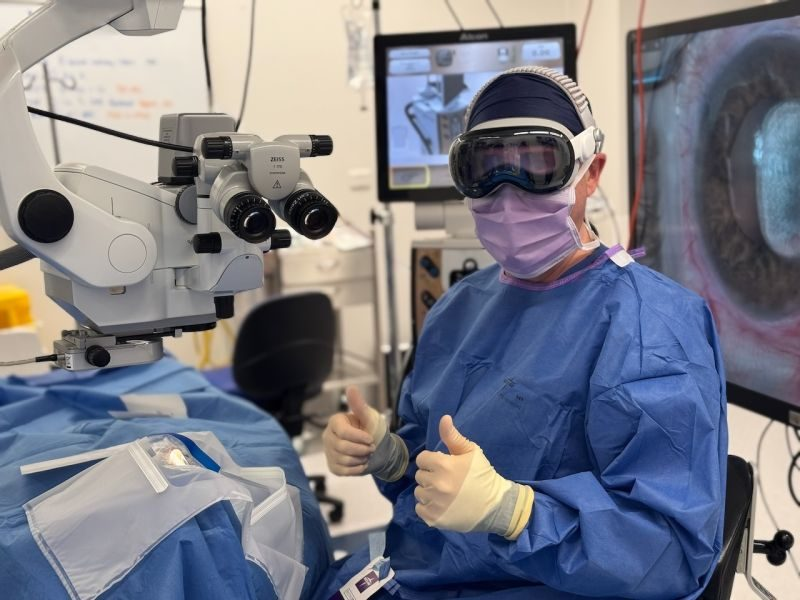

Fastest recovery
LASIK
LASIK (laser-assisted in situ keratomileusis) is the world's most performed vision correction procedure. A...
How it worksThe EVO ICL (implantable collamer lens) is a soft, flexible lens placed inside the eye, behind the iris and in front of your natural lens, where it corrects short-sightedness and astigmatism permanently without removing any corneal tissue. It is the treatment of choice for high prescriptions, thin or irregular corneas and dry eyes, it offers exceptionally sharp vision, and it can be removed if your needs ever change.

The EVO ICL is a thin, soft lens, smaller than a contact lens, made of a biocompatible collagen-based material called Collamer. It is folded, inserted through a 3 millimetre opening at the edge of the cornea and unfolded inside the eye, where the surgeon positions it in the space behind the iris and in front of the natural lens. There it stays, invisible from the outside, correcting your vision permanently while leaving every part of your own eye intact.
Because the cornea is not reshaped, the ICL is not limited by corneal thickness or shape and can correct prescriptions far beyond the reach of laser, up to −20 D of short-sightedness. It also protects the retina from ultraviolet light and, unlike laser, does not disturb the corneal nerves that maintain the tear film, so it does not cause dry eye.
The ICL is the procedure of choice when:
Your surgeon will also check that the space in the front of the eye is deep enough for the lens (an anterior chamber depth of at least 3.0 millimetres), that the cells lining the inside of the cornea are healthy and plentiful, and that there is no cataract, glaucoma or retinal disease that would change the recommendation. The lens is approved for people aged 21 to 45; older patients are considered case by case, and from the late 40s onwards refractive lens exchange is often a better option.
Most people see clearly the next day and are back at work within two to three days. Antibiotic and anti-inflammatory drops are used for about four weeks. There is no surface healing, so discomfort is minimal, but you should avoid rubbing the eyes, swimming and strenuous exercise for two weeks. Because the ICL is a lens inside the eye, we review the position of the lens (its 'vault' above your natural lens), your eye pressure and the corneal cells at each visit and then once a year for life.
The ICL produces some of the best visual outcomes of any refractive procedure, particularly in high prescriptions, and long-term studies extending beyond ten years show stable results. The risks are different from laser and are specific to intraocular surgery:
No. An ordinary contact lens sits on the surface of the eye and is taken in and out. The ICL is a permanent implant placed inside the eye, behind the coloured iris, where it cannot be felt, seen or dislodged and needs no cleaning or maintenance. It is made of Collamer, a soft material containing collagen that the eye tolerates well and that filters ultraviolet light. The 'contact lens' name simply describes the idea of correcting vision with a lens rather than by reshaping the cornea.
Laser procedures permanently remove corneal tissue to change the focusing power of the eye. The ICL adds a lens instead, so the cornea is left untouched and the procedure is reversible. That makes it the safer choice when a prescription is too high for laser, when the cornea is too thin or slightly irregular, or when dry eye would be aggravated by laser. Because the ICL sits close to the eye's own lens, it also gives particularly sharp, high-contrast vision in high prescriptions, where laser corrections can compromise night vision. The trade-offs are that it is an intraocular procedure, with a small set of risks specific to placing a lens inside the eye, and that it costs more.
No. Earlier ICL models required one or two small laser openings in the iris (peripheral iridotomies) before surgery so that fluid could flow around the implant. The EVO ICL has a 360-micrometre central port that lets the eye's natural fluid circulate through the lens, so no iridotomy is needed and the risk of cataract from disturbed fluid flow is much lower than with the older design.
Yes. The ICL is designed to stay in place for life, but it can be removed or exchanged through the same small incision if your prescription changes significantly, if a cataract develops in later life, or if the lens size proves not to be ideal. This reversibility is one of its main attractions.
You cannot see the lens itself. A minority of people notice a faint ring or halo around bright lights at night in the first months, related to the central port and the edge of the lens, and this almost always fades as the brain adapts. Most ICL patients report excellent night vision, and in the United States EVO ICL clinical trial the great majority said they would choose the procedure again.
The EVO ICL is made by STAAR Surgical, has been implanted in more than three million eyes worldwide and is included on the Australian Register of Therapeutic Goods. It is approved for adults aged 21 to 45 with a stable prescription; suitable people outside that age range are considered individually by your surgeon.
This information is general in nature and does not replace advice from your own doctor or optometrist. If you are worried about your eyes, please call us on 07 3239 5000.
LASIK (laser-assisted in situ keratomileusis) is the world's most performed vision correction procedure. A...
How it worksTransPRK (transepithelial photorefractive keratectomy) is the most advanced form of surface laser. In a...
How it worksPhotorefractive keratectomy (PRK), also called advanced surface ablation (ASA), was the first laser vision...
How it worksCLEAR (Corneal Lenticule Extraction for Advanced Refractive correction) is keyhole, flap-free laser vision...
How it worksRefractive lens exchange (RLE) replaces the eye's natural lens with a premium artificial lens chosen for...
How it worksNo referral needed. Your assessment is with the surgeon who would perform your treatment.